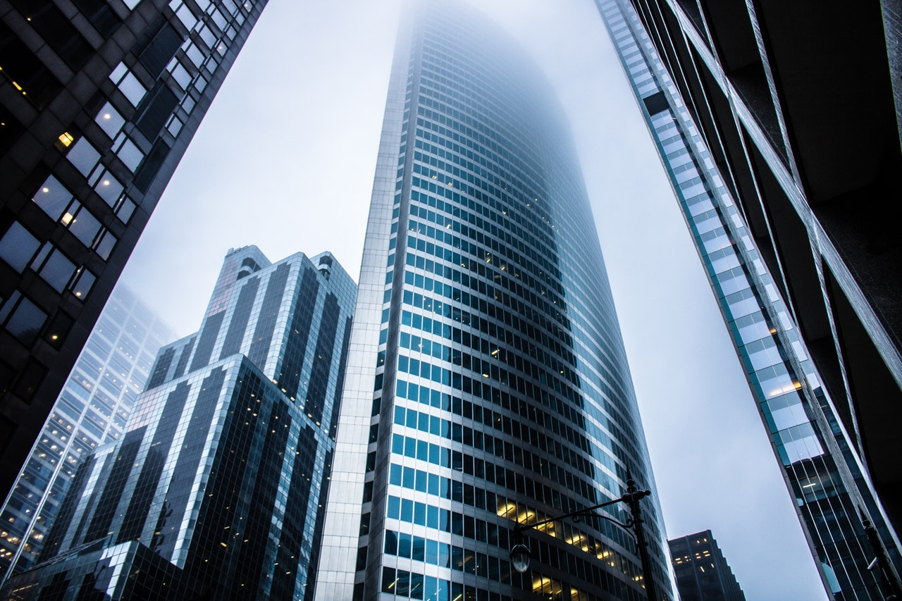

Skyscrapers
Небоскрёб (от англ. skyscraper) — очень высокое здание с несущим стальным или железобетонным каркасом, предназначенное для жизни и работы людей. В русском языке также используется термин «высотное здание» или просто «высотка». До XIX века здания высотой более шести этажей строились редко. Это было связано с неудобством поднятия по лестницам на большую высоту. Кроме того, водяные насосы, применявшиеся в то время, позволяли поднимать воду не более чем на 10 м. Развитие технологий стали, железобетона и водных напорных насосов, а также изобретение безопасных лифтов позволили в десятки раз увеличить высоту зданий, что особенно востребовано в мегаполисах, где велика стоимость площади застройки.
В предыдущей истории человечества также строились: - многоэтажные (в том числе узкие) здания (Башни Флоренции и Болоньи X-XII веков) и - даже целые города из них (например, Шибам, многоэтажный город XVI века в Йемене). Однако первым небоскрёбом принято считать построенное в 1885 году в Чикаго здание Страховой компании (Home Insurance Building), просуществовавшее до 1931 года. Первоначально оно имело всего 10 этажей и высоту 42 м; позднее, в 1891 году, были надстроены ещё два этажа, а высота здания выросла до 54,9 м. Автор проекта — американский архитектор Уильям Ле Барон Дженни — предложил новаторскую технологию строительства, при которой впервые был использован несущий каркас
Традиционно роль несущей конструкции выполняли внешние стены. Исходя из того, что удельная прочность стали примерно в 50 раз выше, чем у самого качественного бетона и каменной или кирпичной кладки, здания стали опираться на металлический каркас, поддерживающий как внешние, так и внутренние стены. Благодаря несущему каркасу общую массу сооружений удалось уменьшить почти на треть. Архитектор не решился полностью отказаться от других несущих конструкций, поэтому здание имело также несущую заднюю стену и гранитные колонны.
Помимо небоскребов башенного типа, в этот период строились и протяженные по горизонтали высотные здания, имевшие многоярусное членение объема. Самым крупным среди них в 1913–1915 гг. стало 39-этажное здание Эквитейбл Лайф-иншуренс , которое имело сложную П-образную конфигурацию и отбрасывало в полдень тень длиной 300 метров, лишавшую света свыше 30 тыс. м2 соседних участков.

В связи с этим в 1916 г. в Нью-Йорке был принят закон о зонировании высот. Для предотвращения затенения здание после установленной высоты должно было подниматься уступами (первая ступень начиналась от уровня 45–60 м). Это привело к появлению новой формы небоскреба с уступчатыми очертаниями. - основой здания служит «скелет» из железобетонных конструкций, - а навесные стены и фасады с застекленными окнами как бы навешивались на этот скелет. Этот небоскрёб послужил прототипом для многих более поздних зданий шестидесятых и семидесятых годов. Этот принцип используется и сейчас.